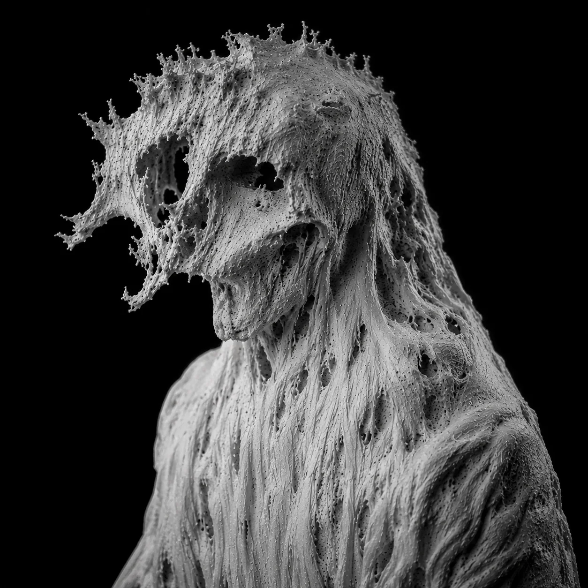
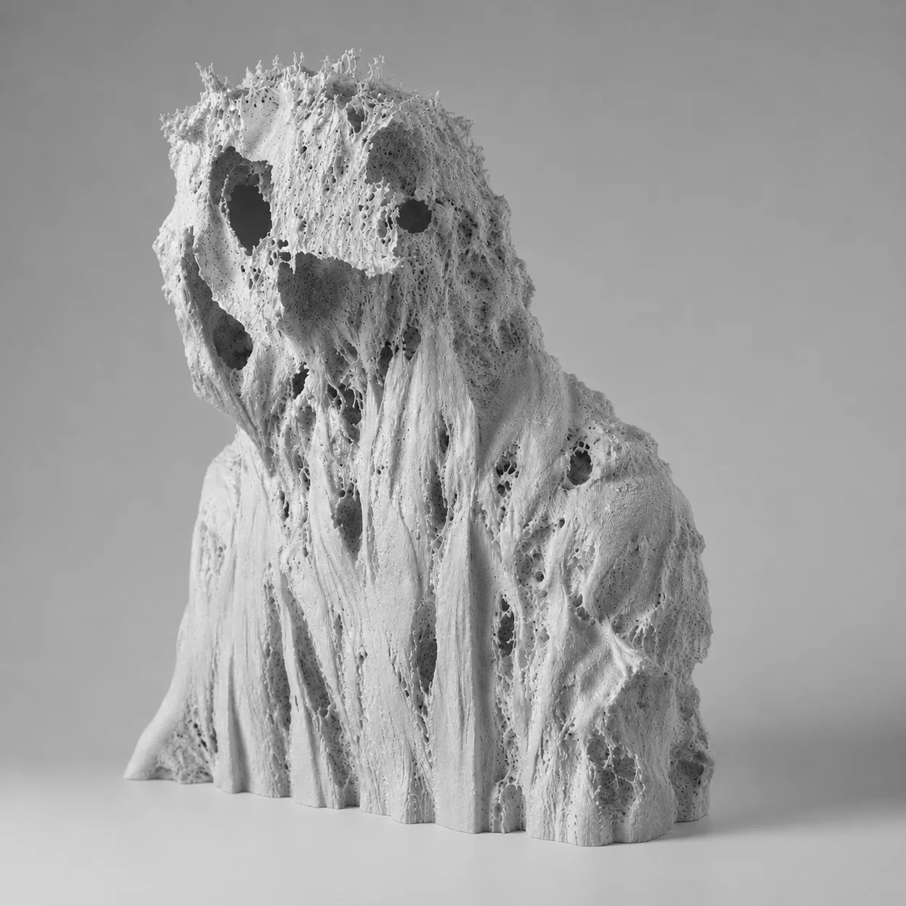
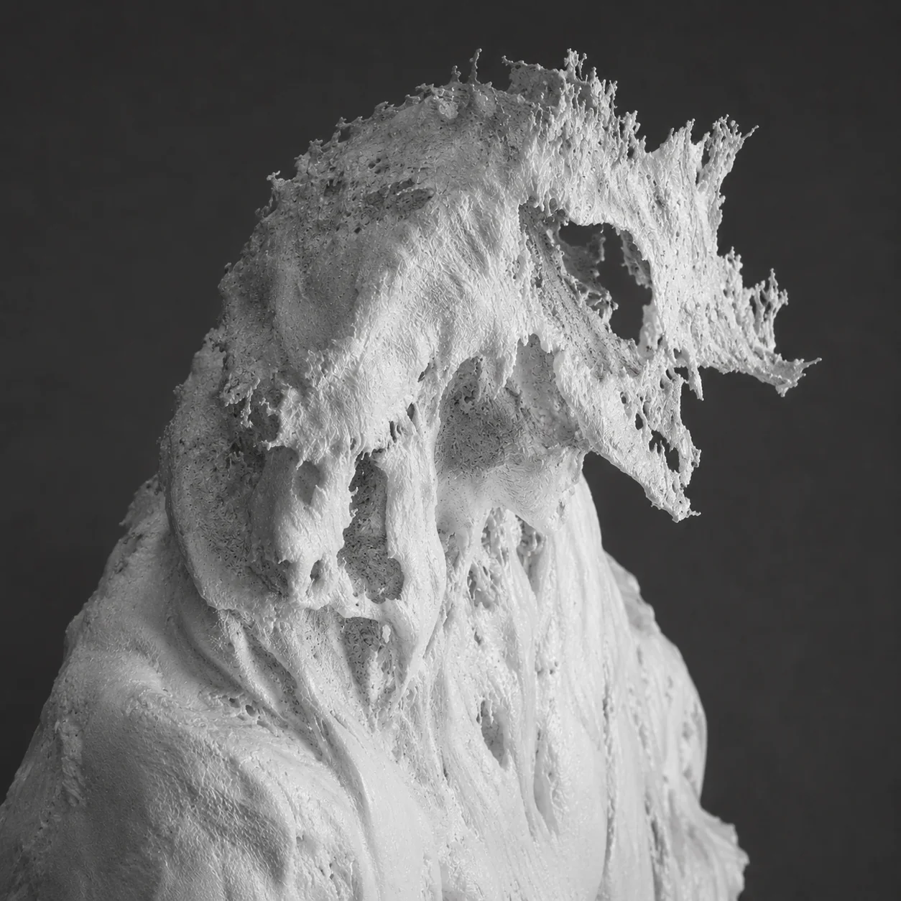
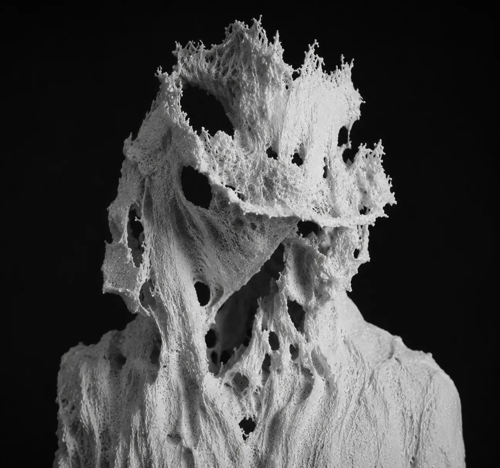
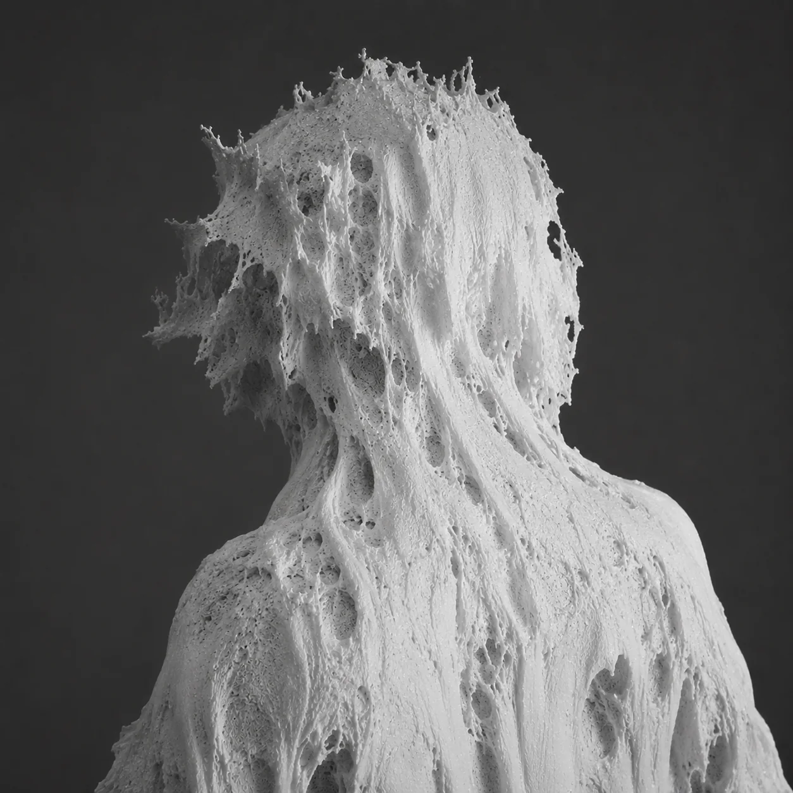

BRAMBLES
Photogrammetry / Sculptural Image / Incomplete Reconstruction
Project statement
BRAMBLES is a photogrammetry-based sculptural image project built from failure, erosion, and incomplete reconstruction.
The work begins with the language of 3D capture, but instead of correcting its errors, it embraces them. Broken surfaces, missing data, torn mesh structures, and fragile holes become the main material of the image. The figure appears almost human, but never fully arrives as a portrait. A face is suggested, then dissolved. Identity grows like thorns, roots, or burned organic matter around an empty center.
In BRAMBLES, photogrammetry is not used as a tool for accuracy, but as a way to reveal distortion. The digital body becomes a wounded archive: a form caught between sculpture, memory, machine vision, and decay. Its surface feels physical, almost touchable, yet it belongs to a space where the body has already been translated, damaged, and rebuilt by technology.
The project explores how images survive after reconstruction, and what remains when the machine fails to understand the human form.



